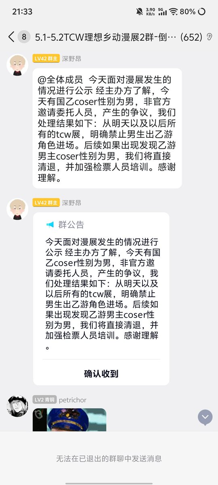

𝐀𝐬𝐡𝐥𝐞𝐲 𝐁𝐥𝐨𝐜𝐤🍥🌹🇹🇼🏳️⚧️🇪🇺
@bolckAshley
@Moutai_H_Maple 這不就證明了實際上你國法治壓根不健全
事實上這一類東西不都是所謂的「灰色地帶」

茅茅taiiiiii
@Moutai_H_Maple
谁还说中国社会原子化，没有小集体。
但凡公权力真的如此深入基层，就很难出现这种小圈子的小规矩居然自以为是凌驾于公民的服装自由，迁徙自由之上。
人花了钱想穿什么穿什么，当街围追辱骂这属于典型的擅自侵犯公民人身自由权利。 https://t.co/UbkaPGGSjO